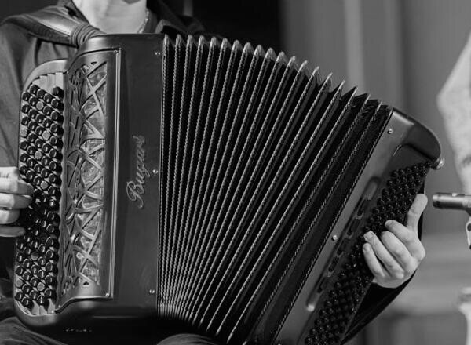
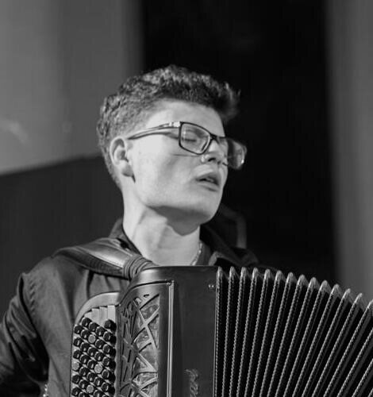

settembre 2026
Jazz Accordion Orchestra al PIF di Castelfidardo
Il debutto assoluto dell'orchestra di fisarmoniche jazz diretta da Renzo Ruggieri, sul palco di Piazza della Repubblica al 51° Premio Internazionale della Fisarmonica.


Fisarmonica jazz e variété. Dall'organetto suonato a sei anni alla Coupe Mondiale: quattro titoli mondiali e il repertorio che ama di più, fra Piazzolla, Parker e il Brasile.

Ultima pubblicazione
EP, 2024 — cinque brani fra Piazzolla, Parker e il repertorio brasiliano
Gli estratti da ascoltare qui arrivano presto. Intanto l'album è su tutte le piattaforme.
Francesco Scarselli è nato a Campobasso nel 2006 ed è cresciuto a Campochiaro. Ha cominciato a suonare l'organetto a sei anni e a undici era campione del mondo.
Nel 2020 ha incontrato la fisarmonica jazz e il suo maestro, Renzo Ruggieri. Oggi studia al Conservatorio Gaetano Braga di Teramo e suona una Bugari Armando.
In due mesi del 2023 ha vinto i tre concorsi più importanti al mondo, uno dietro l'altro.

settembre 2026
Il debutto assoluto dell'orchestra di fisarmoniche jazz diretta da Renzo Ruggieri, sul palco di Piazza della Repubblica al 51° Premio Internazionale della Fisarmonica.

2026
Il seguito di Accordion Alchemy e Ethnic Euphony è in scrittura. Chi è nel canale lo saprà per primo.
2026
Un canale per fisarmonicisti di tutto il mondo: registrazioni, concorsi, repertorio, cose che si imparano solo parlando con chi suona.
Il canale dei fisarmonicisti: nuove uscite, concorsi in giro per il mondo, repertorio e qualche retroscena dai concerti. Si entra gratis e si esce quando si vuole.